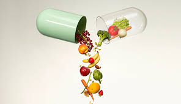
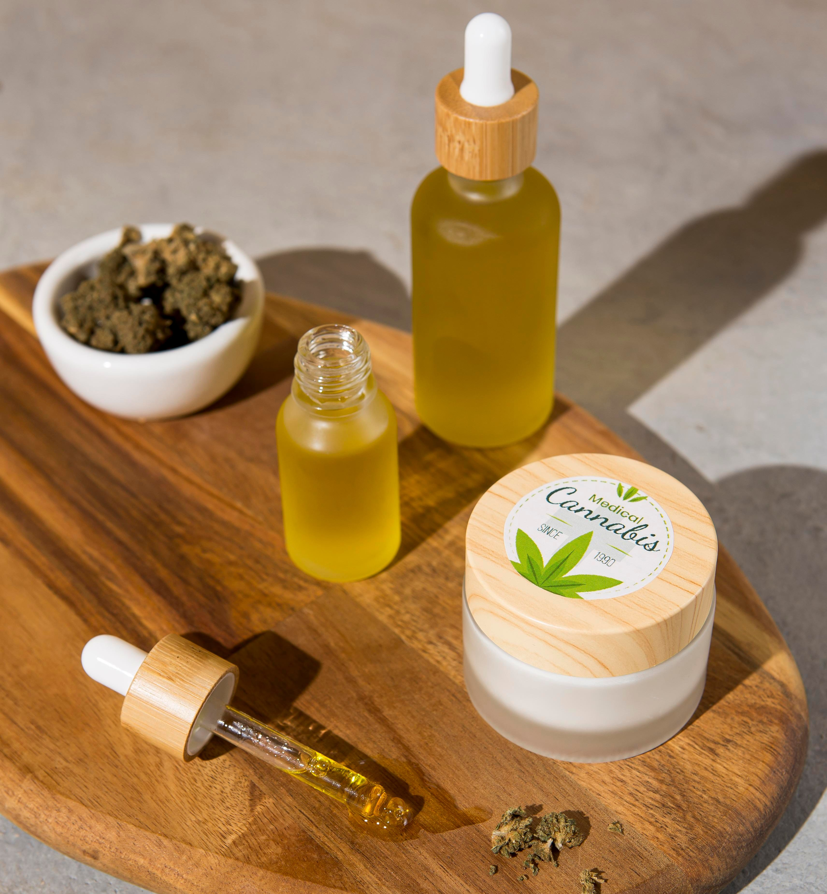
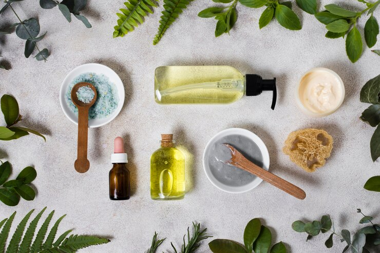

Servicios

Suplementos nutricionales

Productos a base de hierbas

Cosméticos naturales
Estos servicios buscan promover un estilo de vida saludable y sostenible, apoyando a los clientes en su búsqueda de opciones más naturales y respetuosas con el medio ambiente.